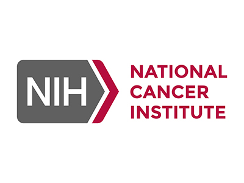
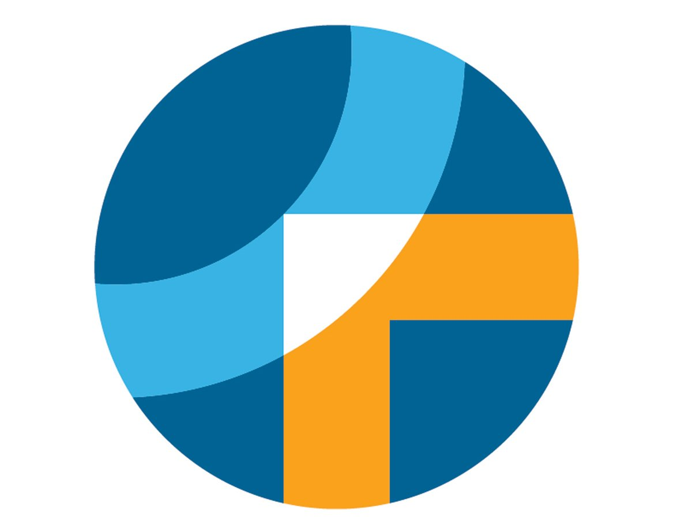
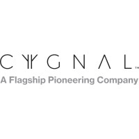

Programming Instructor
iCode School Franchise
Oct 2025 - Present | Teaching Python, Scratch, Construct 3
Key Contributions:
- Design engaging lesson plans, coding challenges, and project-based assessments
- Mentor students in building interactive web apps and games (HTML/CSS/JS, PHP/MySQL, Roblox Lua, Scratch)
- Teach debugging, logical thinking, and structured problem-solving
- Lead capstone-style builds and seasonal STEAM camps
- Translate complex technical concepts into age-appropriate, hands-on learning experiences
- Guide students from block-based programming to text-based coding, building confidence, creativity, and computational literacy.
Data Analyst (AEOP Fellow)
Walter Reed Army Institute of Research (WRAIR)
Feb 2025 - Sep 2025 | Multi-omics workflows
Key Contributions:
- Designed and executed multi-omics analysis pipelines to uncover molecular programs underlying traumatic brain injury (TBI) and recovery.
- Integrated patient blood biomarkers with matched controls to model early predictors of infection and non-union in a clinical healing study.
- Harmonized transcriptomic, metabolomic, lipidomic, and microbiome datasets to characterize systemic responses to gastrointestinal injury.
- Analyzed behavioral neuroscience datasets (barrier test assays using EthoVision) to investigate PTSD-like phenotypes.
Image Analysis Intern
Carnegie Mellon University
Oct 2024 - Dec 2024 | AI/ML for cryoET images in drug discovery
Key Contributions:
- Analyzed cryo-electron tomography (cryoET) datasets for drug discovery research using AI/ML models in PyTorch.
- Processed and interpreted structural biology data using cryoEM tools including RELION.
- Contributed to research design and grant proposal preparation, including literature reviews and project planning.

Cancer Research Intern
National Cancer Institute (NCI/NIH)
May 2024 - Aug 2024 | ML for phenocopy detection
Key Contributions:
- Employed XGBoost to develop a machine-learning model using TCGA and ICGC data to identify transcriptional phenocopies of the KRASG12D mutation, enhancing clinical decision-making for patients without the mutation but exhibiting similar phenotypic traits.
- Assessed the ability of the phenocopy model to identify single cells with KRASG12D mutations in various non-malignant samples using single-cell data.
- Analyzed spatial-transcriptomics data to identify the preferred microenvironments of cells harboring KRASG12D mutations.
- Presented our research at the 2024 NIH Summer Poster Day.
Database Development Intern
Boston University
Jan 2024 - May 2024 | Multi-omics Alzheimer's Database
Key Contributions:
- Database Architecture & Pipelines: Developed a comprehensive database architecture and pipelines for processing and integrating multi-omics Alzheimer's disease datasets across various cell types and disease states. This included the analysis of bulk/single-cell ATAC-seq, RNA-seq, and ChIP-seq using packages such as Seurat, ArchR, and Scanpy.
- Analysis Framework Development: Created an advanced analysis framework to construct cell type-specific TF-CRE-gene regulatory networks under various conditions by integrating epigenomic and transcriptional profiles.
- Interactive Visualization Tools: Established interactive visualizations, including locus-view tracks, global/subnetwork topology overlays with GWAS data, and regulatory activity heatmaps. These tools facilitate the exploratory analysis of network perturbations across different cellular contexts.
- Customizable API Services & UI Dashboards: Developed customizable API services and user interface dashboards using SQL, JavaScript, CSS, AJAX, RShiny and similar tools for querying and analyzing multidimensional regulatory genomics data layers, reference annotations, cell type networks, and disease modules within the knowledgebase.

Research Technician
Dana-Farber Cancer Institute
Aug 2022 - Mar 2023 | Cancer immunotherapy design
Key Contributions:
- Machine-Learning-Based Cancer Immunotherapy Design:
- ML Model Development: Assisted in developing machine learning models to identify the most effective sensors for precise cancer targeting.
- Transcription Factor-Sensor Library: Contributed to building a comprehensive library of transcription factor-sensors.
- Sense & Respond Gene Circuits (SEARGENT):
- In Vitro Validation: Validated SEARGENT-boosted CAR-T cells exhibiting enhanced anti-tumor specificity and efficacy in vitro.
- Experimental Design: Designed experiments to evaluate the specificity and therapeutic efficacy of SEARGENTs in vivo and identify the best combinations for future clinical translation.
- Mutation-Detecting Gene Circuit Platform:
- Gene Circuit Design: Designed gene circuits to detect DNA mutations in primary ovarian cancer cells using the CRISPR/Cas9 system.
- In Vitro Validation: Validated the therapeutic efficacy of these gene circuits for triggering tumor-specific immunotherapy in vitro.

Bioinformatics Intern
Cygnal Therapeutics
Aug 2021 - Dec 2021 | Image Analysis
Key Contributions:
- Developed an immunofluorescence (IF) image analysis pipeline to evaluate target knockdown in neurons and its effect on macrophage polarization (pro-tumor → anti-tumor phenotypes).
- Guided assay design and IF marker panel selection to ensure compatibility with automated image analysis workflows.
- Applied the pipeline to patient histology datasets across multiple cancers to quantify tumor innervation and identify highly innervated tumor types.
- Analyzed RNA-seq datasets to identify predictive oncogenic biomarkers linked to exo-neuronal signaling pathways in the tumor microenvironment (TME).
- Discovered co-dependencies and potential synthetic lethal target combinations to support therapeutic target discovery.